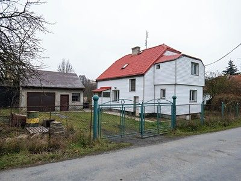
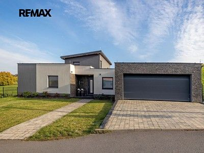
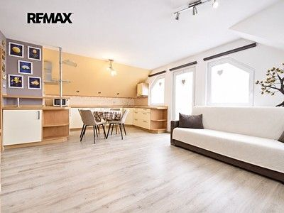
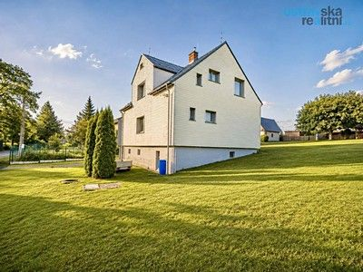
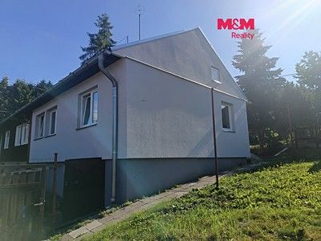
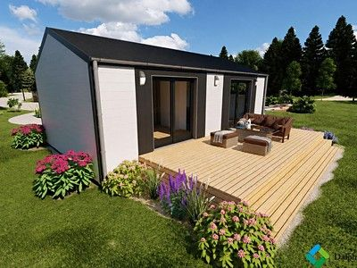
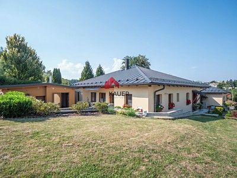

Advert no longer observed
Prodej rodinného domu 156 m², pozemek 628 m²
Hranice, Karviná
2,990,000 CZK → Not stated
Original advert ↗Daily market update · 2026-11-15 · Ostrava + 15 km
Data limitation: Prices are advertised, not completed transaction prices. Disappeared adverts are NOT proof of sold or rented status. Search radius may be unverified for individual locations. "New" means first observed since a comparable complete Sreality scan, not independently verified as newly published. "New to tracker" may reflect expanded or partial portal coverage. Older Sreality IDs and known cross-lists are excluded. Additional monthly rental charges are not reliably supplied in these search cards.

Hranice, Karviná
2,990,000 CZK → Not stated
Original advert ↗
Koblov, Ostrava-město
11,200,000 CZK → Not stated
Original advert ↗
Proskovice, Ostrava-město
Not stated → 11,990,000 CZK
Original advert ↗
Záblatí, Karviná
5,500,000 CZK → Not stated
Original advert ↗
Bludovice, Karviná
3,900,000 CZK → 3,900,000 CZK
Original advert ↗
Petřkovice, Ostrava-město
Not stated → 14,900,000 CZK
Original advert ↗
Petřvald, Karviná
4,200,000 CZK → Not stated
Original advert ↗
Petřvald, Karviná
4,800,000 CZK → Not stated
Original advert ↗
Petrovice u Karviné, Karviná
4,900,000 CZK → Not stated
Original advert ↗
Dolní Lhota, Ostrava-město
20,800,000 CZK → 20,800,000 CZK
Original advert ↗